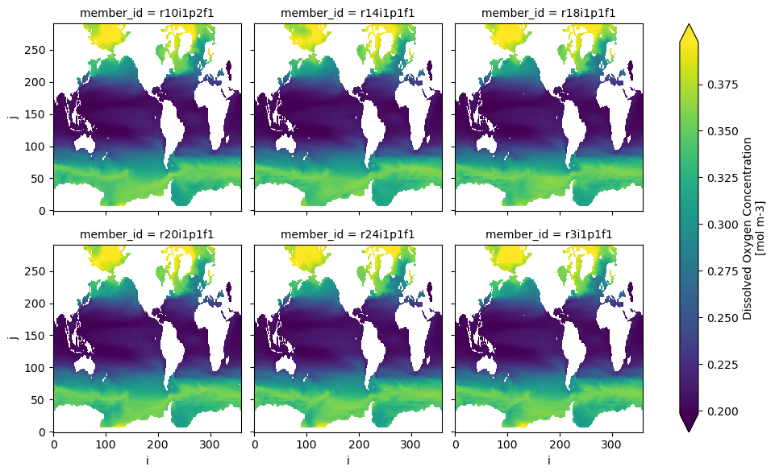

Accessing CMIP6 data with intake-esm#
Download this notebook
This notebook demonstrates how to access Google Cloud CMIP6 data using intake-esm.
Intake-esm is a data cataloging utility built on top of intake, pandas, and xarray. Intake-esm aims to facilitate:
the discovery of earth’s climate and weather datasets.
the ingestion of these datasets into xarray dataset containers.
It’s basic usage is shown below. To begin, let’s import intake:
import intake
import xarray as xr
Load the catalog#
At import time, intake-esm plugin is available in intake’s registry as
esm_datastore and can be accessed with intake.open_esm_datastore() function.
Use the intake_esm.tutorial.get_url() method to access smaller subsetted catalogs for tutorial purposes.
import intake_esm
#url = intake_esm.tutorial.get_url('google_cmip6')
#print(url)
url ="https://raw.githubusercontent.com/NCAR/intake-esm-datastore/master/catalogs/pangeo-cmip6.json"
cat = intake.open_esm_datastore(url)
cat
pangeo-cmip6 catalog with 7674 dataset(s) from 514818 asset(s):
| unique | |
|---|---|
| activity_id | 18 |
| institution_id | 36 |
| source_id | 88 |
| experiment_id | 170 |
| member_id | 657 |
| table_id | 37 |
| variable_id | 700 |
| grid_label | 10 |
| zstore | 514818 |
| dcpp_init_year | 60 |
| version | 736 |
| derived_variable_id | 0 |
The summary above tells us that this catalog contains 514818 data assets. We can get more information on the individual data assets contained in the catalog by looking at the underlying dataframe created when we load the catalog:
cat.df
| activity_id | institution_id | source_id | experiment_id | member_id | table_id | variable_id | grid_label | zstore | dcpp_init_year | version | |
|---|---|---|---|---|---|---|---|---|---|---|---|
| 0 | HighResMIP | CMCC | CMCC-CM2-HR4 | highresSST-present | r1i1p1f1 | Amon | ps | gn | gs://cmip6/CMIP6/HighResMIP/CMCC/CMCC-CM2-HR4/... | NaN | 20170706 |
| 1 | HighResMIP | CMCC | CMCC-CM2-HR4 | highresSST-present | r1i1p1f1 | Amon | rsds | gn | gs://cmip6/CMIP6/HighResMIP/CMCC/CMCC-CM2-HR4/... | NaN | 20170706 |
| 2 | HighResMIP | CMCC | CMCC-CM2-HR4 | highresSST-present | r1i1p1f1 | Amon | rlus | gn | gs://cmip6/CMIP6/HighResMIP/CMCC/CMCC-CM2-HR4/... | NaN | 20170706 |
| 3 | HighResMIP | CMCC | CMCC-CM2-HR4 | highresSST-present | r1i1p1f1 | Amon | rlds | gn | gs://cmip6/CMIP6/HighResMIP/CMCC/CMCC-CM2-HR4/... | NaN | 20170706 |
| 4 | HighResMIP | CMCC | CMCC-CM2-HR4 | highresSST-present | r1i1p1f1 | Amon | psl | gn | gs://cmip6/CMIP6/HighResMIP/CMCC/CMCC-CM2-HR4/... | NaN | 20170706 |
| ... | ... | ... | ... | ... | ... | ... | ... | ... | ... | ... | ... |
| 514813 | CMIP | EC-Earth-Consortium | EC-Earth3-Veg | historical | r1i1p1f1 | Amon | tas | gr | gs://cmip6/CMIP6/CMIP/EC-Earth-Consortium/EC-E... | NaN | 20211207 |
| 514814 | CMIP | EC-Earth-Consortium | EC-Earth3-Veg | historical | r1i1p1f1 | Amon | tauu | gr | gs://cmip6/CMIP6/CMIP/EC-Earth-Consortium/EC-E... | NaN | 20211207 |
| 514815 | CMIP | EC-Earth-Consortium | EC-Earth3-Veg | historical | r1i1p1f1 | Amon | hur | gr | gs://cmip6/CMIP6/CMIP/EC-Earth-Consortium/EC-E... | NaN | 20211207 |
| 514816 | CMIP | EC-Earth-Consortium | EC-Earth3-Veg | historical | r1i1p1f1 | Amon | hus | gr | gs://cmip6/CMIP6/CMIP/EC-Earth-Consortium/EC-E... | NaN | 20211207 |
| 514817 | CMIP | EC-Earth-Consortium | EC-Earth3-Veg | historical | r1i1p1f1 | Amon | tauv | gr | gs://cmip6/CMIP6/CMIP/EC-Earth-Consortium/EC-E... | NaN | 20211207 |
514818 rows × 11 columns
The first data asset listed in the catalog contains:
the surace pressure (variable_id=’ps’), as a function of latitude, longitude, time,
the high resolution version of the CMCC climate model (source_id=’CMCC-CM2-HR4’),
the high resolution model intercomparison expermenet (experiment_id=’HighResMIP’),
developed by the Euro-Mediterranean Centre on Climate Change (instution_id=’CMCC’),
run as part of the Coupled Model Intercomparison Project (activity_id=’CMIP’)
And is located in Google Cloud Storage at ‘gs://cmip6/CMIP6/HighResMIP/CMCC/CMCC-CM2-HR4/highresSST-present/r1i1p1f1/Amon/ps/gn/v20170706/”
Finding unique entries#
To get unique values for given columns in the catalog, intake-esm provides a
unique() method:
Let’s query the data catalog to see what models(source_id), experiments
(experiment_id) and temporal frequencies (table_id) are available.
unique = cat.unique()
unique
activity_id [HighResMIP, CMIP, CFMIP, ScenarioMIP, AerChem...
institution_id [CMCC, EC-Earth-Consortium, MOHC, ECMWF, NOAA-...
source_id [CMCC-CM2-HR4, EC-Earth3P-HR, HadGEM3-GC31-MM,...
experiment_id [highresSST-present, piControl, control-1950, ...
member_id [r1i1p1f1, r1i3p1f1, r1i2p1f1, r1i1p1f2, r2i1p...
table_id [Amon, 6hrPlev, 3hr, day, EmonZ, E3hr, 6hrPlev...
variable_id [ps, rsds, rlus, rlds, psl, hurs, huss, hus, h...
grid_label [gn, gr, gr1, grz, gr2, gr2z, gr1z, gr3, gm, gnz]
zstore [gs://cmip6/CMIP6/HighResMIP/CMCC/CMCC-CM2-HR4...
dcpp_init_year [1920.0, 1992.0, 2007.0, 2006.0, 2008.0, 1968....
version [20170706, 20170811, 20170818, 20170831, 20170...
derived_variable_id []
dtype: object
unique['source_id'][:10]
['CMCC-CM2-HR4',
'EC-Earth3P-HR',
'HadGEM3-GC31-MM',
'HadGEM3-GC31-HM',
'HadGEM3-GC31-LM',
'EC-Earth3P',
'ECMWF-IFS-HR',
'ECMWF-IFS-LR',
'HadGEM3-GC31-LL',
'CMCC-CM2-VHR4']
experiments = unique['experiment_id']
experiments.sort()
experiments
['1pctCO2',
'1pctCO2-4xext',
'1pctCO2-bgc',
'1pctCO2-cdr',
'1pctCO2-rad',
'1pctCO2to4x-withism',
'abrupt-0p5xCO2',
'abrupt-2xCO2',
'abrupt-4xCO2',
'abrupt-solm4p',
'abrupt-solp4p',
'amip',
'amip-4xCO2',
'amip-future4K',
'amip-hist',
'amip-lwoff',
'amip-m4K',
'amip-p4K',
'amip-p4K-lwoff',
'aqua-4xCO2',
'aqua-control',
'aqua-control-lwoff',
'aqua-p4K',
'aqua-p4K-lwoff',
'control-1950',
'dcppA-assim',
'dcppA-hindcast',
'dcppC-amv-ExTrop-neg',
'dcppC-amv-ExTrop-pos',
'dcppC-amv-Trop-neg',
'dcppC-amv-Trop-pos',
'dcppC-amv-neg',
'dcppC-amv-pos',
'dcppC-atl-control',
'dcppC-atl-pacemaker',
'dcppC-hindcast-noAgung',
'dcppC-hindcast-noElChichon',
'dcppC-hindcast-noPinatubo',
'dcppC-ipv-NexTrop-neg',
'dcppC-ipv-NexTrop-pos',
'dcppC-ipv-neg',
'dcppC-ipv-pos',
'dcppC-pac-control',
'dcppC-pac-pacemaker',
'deforest-globe',
'esm-hist',
'esm-pi-CO2pulse',
'esm-pi-cdr-pulse',
'esm-piControl',
'esm-piControl-spinup',
'esm-ssp585',
'esm-ssp585-ssp126Lu',
'faf-all',
'faf-heat',
'faf-heat-NA0pct',
'faf-heat-NA50pct',
'faf-passiveheat',
'faf-stress',
'faf-water',
'futSST-pdSIC',
'highresSST-future',
'highresSST-present',
'hist-1950',
'hist-1950HC',
'hist-CO2',
'hist-GHG',
'hist-GHG-cmip5',
'hist-aer',
'hist-aer-cmip5',
'hist-bgc',
'hist-nat',
'hist-nat-cmip5',
'hist-noLu',
'hist-piAer',
'hist-piNTCF',
'hist-resIPO',
'hist-sol',
'hist-stratO3',
'hist-totalO3',
'hist-volc',
'histSST',
'histSST-1950HC',
'histSST-piAer',
'histSST-piCH4',
'histSST-piNTCF',
'histSST-piO3',
'historical',
'historical-cmip5',
'historical-ext',
'land-hist',
'land-hist-altStartYear',
'land-noLu',
'lgm',
'lig127k',
'midHolocene',
'omip1',
'pa-futAntSIC',
'pa-futArcSIC',
'pa-pdSIC',
'pa-piAntSIC',
'pa-piArcSIC',
'past1000',
'pdSST-futAntSIC',
'pdSST-futArcSIC',
'pdSST-futArcSICSIT',
'pdSST-futBKSeasSIC',
'pdSST-futOkhotskSIC',
'pdSST-pdSIC',
'pdSST-pdSICSIT',
'pdSST-piAntSIC',
'pdSST-piArcSIC',
'piClim-2xDMS',
'piClim-2xNOx',
'piClim-2xVOC',
'piClim-2xdust',
'piClim-2xfire',
'piClim-2xss',
'piClim-4xCO2',
'piClim-BC',
'piClim-CH4',
'piClim-HC',
'piClim-N2O',
'piClim-NOx',
'piClim-NTCF',
'piClim-O3',
'piClim-OC',
'piClim-SO2',
'piClim-VOC',
'piClim-aer',
'piClim-anthro',
'piClim-control',
'piClim-ghg',
'piClim-histaer',
'piClim-histall',
'piClim-histghg',
'piClim-histnat',
'piClim-lu',
'piControl',
'piControl-cmip5',
'piControl-spinup',
'piSST-pdSIC',
'piSST-piSIC',
'rcp26-cmip5',
'rcp45-cmip5',
'rcp85-cmip5',
'ssp119',
'ssp126',
'ssp126-ssp370Lu',
'ssp245',
'ssp245-GHG',
'ssp245-aer',
'ssp245-cov-fossil',
'ssp245-cov-modgreen',
'ssp245-cov-strgreen',
'ssp245-covid',
'ssp245-nat',
'ssp245-stratO3',
'ssp370',
'ssp370-lowNTCF',
'ssp370-ssp126Lu',
'ssp370SST',
'ssp370SST-lowCH4',
'ssp370SST-lowNTCF',
'ssp370SST-ssp126Lu',
'ssp370pdSST',
'ssp434',
'ssp460',
'ssp534-over',
'ssp585',
'ssp585-bgc']
unique['table_id'][:10]
['Amon',
'6hrPlev',
'3hr',
'day',
'EmonZ',
'E3hr',
'6hrPlevPt',
'AERmon',
'LImon',
'CFmon']
Search for specific datasets#
The search() method allows the user to
perform a query on a catalog using keyword arguments. The keyword argument names
must match column names in the catalog. The search method returns a
subset of the catalog with all the entries that match the provided query.
In the example below, we are are going to search for the following:
variable_d:
o2which stands formole_concentration_of_dissolved_molecular_oxygen_in_sea_waterexperiments: [‘historical’, ‘ssp585’]:
historical: all forcing of the recent past.
ssp585: emission-driven RCP8.5 based on SSP5.
table_id:
0yrwhich stands for annual mean variables on the ocean grid.grid_label:
gnwhich stands for data reported on a model’s native grid.
Note
For more details on the CMIP6 vocabulary, please check this website, and Core Controlled Vocabularies (CVs) for use in CMIP6 GitHub repository.
cat_subset = cat.search(
experiment_id=["historical", "ssp585"],
table_id="Oyr",
variable_id="o2",
grid_label="gn",
)
cat_subset
pangeo-cmip6 catalog with 27 dataset(s) from 173 asset(s):
| unique | |
|---|---|
| activity_id | 2 |
| institution_id | 13 |
| source_id | 15 |
| experiment_id | 2 |
| member_id | 47 |
| table_id | 1 |
| variable_id | 1 |
| grid_label | 1 |
| zstore | 173 |
| dcpp_init_year | 0 |
| version | 29 |
| derived_variable_id | 0 |
Load datasets using to_dataset_dict()#
Intake-esm implements convenience utilities for loading the query results into
higher level xarray datasets. The logic for merging/concatenating the query
results into higher level xarray datasets is provided in the input JSON file and
is available under .aggregation_info property of the catalog:
cat.esmcat.aggregation_control
AggregationControl(variable_column_name='variable_id', groupby_attrs=['activity_id', 'institution_id', 'source_id', 'experiment_id', 'table_id', 'grid_label'], aggregations=[Aggregation(type=<AggregationType.union: 'union'>, attribute_name='variable_id', options={}), Aggregation(type=<AggregationType.join_new: 'join_new'>, attribute_name='member_id', options={'coords': 'minimal', 'compat': 'override'}), Aggregation(type=<AggregationType.join_new: 'join_new'>, attribute_name='dcpp_init_year', options={'coords': 'minimal', 'compat': 'override'})])
To load data assets into xarray datasets, we need to use the
to_dataset_dict() method. This method
returns a dictionary of aggregate xarray datasets as the name hints.
dset_dict = cat_subset.to_dataset_dict(
xarray_open_kwargs={"consolidated": True, "decode_times": True, "use_cftime": True}
)
--> The keys in the returned dictionary of datasets are constructed as follows:
'activity_id.institution_id.source_id.experiment_id.table_id.grid_label'
[key for key in dset_dict.keys()][:10]
['ScenarioMIP.EC-Earth-Consortium.EC-Earth3-CC.ssp585.Oyr.gn',
'ScenarioMIP.NCC.NorESM2-LM.ssp585.Oyr.gn',
'ScenarioMIP.DKRZ.MPI-ESM1-2-HR.ssp585.Oyr.gn',
'ScenarioMIP.MRI.MRI-ESM2-0.ssp585.Oyr.gn',
'CMIP.EC-Earth-Consortium.EC-Earth3-CC.historical.Oyr.gn',
'CMIP.CMCC.CMCC-ESM2.historical.Oyr.gn',
'ScenarioMIP.MPI-M.MPI-ESM1-2-LR.ssp585.Oyr.gn',
'CMIP.CCCma.CanESM5-CanOE.historical.Oyr.gn',
'CMIP.CSIRO.ACCESS-ESM1-5.historical.Oyr.gn',
'CMIP.MRI.MRI-ESM2-0.historical.Oyr.gn']
We can access a particular dataset as follows:
ds = dset_dict["CMIP.CCCma.CanESM5.historical.Oyr.gn"]
ds
<xarray.Dataset>
Dimensions: (i: 360, j: 291, lev: 45, bnds: 2, member_id: 35,
dcpp_init_year: 1, time: 165, vertices: 4)
Coordinates:
* i (i) int32 0 1 2 3 4 5 6 ... 353 354 355 356 357 358 359
* j (j) int32 0 1 2 3 4 5 6 ... 284 285 286 287 288 289 290
latitude (j, i) float64 dask.array<chunksize=(291, 360), meta=np.ndarray>
* lev (lev) float64 3.047 9.454 16.36 ... 5.375e+03 5.625e+03
lev_bnds (lev, bnds) float64 dask.array<chunksize=(45, 2), meta=np.ndarray>
longitude (j, i) float64 dask.array<chunksize=(291, 360), meta=np.ndarray>
* time (time) object 1850-07-02 12:00:00 ... 2014-07-02 12:0...
time_bnds (time, bnds) object dask.array<chunksize=(165, 2), meta=np.ndarray>
vertices_latitude (j, i, vertices) float64 dask.array<chunksize=(291, 360, 4), meta=np.ndarray>
vertices_longitude (j, i, vertices) float64 dask.array<chunksize=(291, 360, 4), meta=np.ndarray>
* member_id (member_id) object 'r10i1p1f1' ... 'r9i1p2f1'
* dcpp_init_year (dcpp_init_year) float64 nan
Dimensions without coordinates: bnds, vertices
Data variables:
o2 (member_id, dcpp_init_year, time, lev, j, i) float32 dask.array<chunksize=(1, 1, 12, 45, 291, 360), meta=np.ndarray>
Attributes: (12/52)
Conventions: CF-1.7 CMIP-6.2
YMDH_branch_time_in_child: 1850:01:01:00
activity_id: CMIP
branch_method: Spin-up documentation
branch_time_in_child: 0.0
cmor_version: 3.4.0
... ...
intake_esm_attrs:table_id: Oyr
intake_esm_attrs:variable_id: o2
intake_esm_attrs:grid_label: gn
intake_esm_attrs:version: 20190429
intake_esm_attrs:_data_format_: zarr
intake_esm_dataset_key: CMIP.CCCma.CanESM5.historical.Oyr.gnLet’s create a quick plot for a slice of the data:
ds.o2.isel(time=0, lev=0, member_id=range(1, 24, 4)).plot(col="member_id", col_wrap=3, robust=True)
<xarray.plot.facetgrid.FacetGrid at 0x2853e41f0>

Use custom preprocessing functions#
When comparing many models it is often necessary to preprocess (e.g. rename
certain variables) them before running some analysis step. The preprocess
argument lets the user pass a function, which is executed for each loaded asset
before combining datasets.
cat_pp = cat.search(
experiment_id=["historical"],
table_id="Oyr",
variable_id="o2",
grid_label="gn",
source_id=["IPSL-CM6A-LR", "CanESM5"],
member_id="r10i1p1f1",
)
cat_pp.df
| activity_id | institution_id | source_id | experiment_id | member_id | table_id | variable_id | grid_label | zstore | dcpp_init_year | version | |
|---|---|---|---|---|---|---|---|---|---|---|---|
| 0 | CMIP | IPSL | IPSL-CM6A-LR | historical | r10i1p1f1 | Oyr | o2 | gn | gs://cmip6/CMIP6/CMIP/IPSL/IPSL-CM6A-LR/histor... | NaN | 20180803 |
| 1 | CMIP | CCCma | CanESM5 | historical | r10i1p1f1 | Oyr | o2 | gn | gs://cmip6/CMIP6/CMIP/CCCma/CanESM5/historical... | NaN | 20190429 |
dset_dict_raw = cat_pp.to_dataset_dict(xarray_open_kwargs={"consolidated": True})
for k, ds in dset_dict_raw.items():
print(f"dataset key={k}\n\tdimensions={sorted(list(ds.dims))}\n")
--> The keys in the returned dictionary of datasets are constructed as follows:
'activity_id.institution_id.source_id.experiment_id.table_id.grid_label'
dataset key=CMIP.IPSL.IPSL-CM6A-LR.historical.Oyr.gn
dimensions=['axis_nbounds', 'dcpp_init_year', 'member_id', 'nvertex', 'olevel', 'time', 'x', 'y']
dataset key=CMIP.CCCma.CanESM5.historical.Oyr.gn
dimensions=['bnds', 'dcpp_init_year', 'i', 'j', 'lev', 'member_id', 'time', 'vertices']
Note
Note that both models follow a different naming scheme. We can define a little
helper function and pass it to .to_dataset_dict() to fix this. For
demonstration purposes we will focus on the vertical level dimension which is
called lev in CanESM5 and olevel in IPSL-CM6A-LR.
def helper_func(ds):
"""Rename `olevel` dim to `lev`"""
ds = ds.copy()
# a short example
if "olevel" in ds.dims:
ds = ds.rename({"olevel": "lev"})
return ds
dset_dict_fixed = cat_pp.to_dataset_dict(xarray_open_kwargs={"consolidated": True}, preprocess=helper_func)
for k, ds in dset_dict_fixed.items():
print(f"dataset key={k}\n\tdimensions={sorted(list(ds.dims))}\n")
--> The keys in the returned dictionary of datasets are constructed as follows:
'activity_id.institution_id.source_id.experiment_id.table_id.grid_label'
dataset key=CMIP.IPSL.IPSL-CM6A-LR.historical.Oyr.gn
dimensions=['axis_nbounds', 'dcpp_init_year', 'lev', 'member_id', 'nvertex', 'time', 'x', 'y']
dataset key=CMIP.CCCma.CanESM5.historical.Oyr.gn
dimensions=['bnds', 'dcpp_init_year', 'i', 'j', 'lev', 'member_id', 'time', 'vertices']
This was just an example for one dimension.
Note
Check out xmip package for a full renaming function for all available CMIP6 models and some other utilities.
Load datasets into an xarray-datatree using to_datatree()#
We can also load our data into an xarray-datatree object using the following:
tree = cat_pp.to_datatree(xarray_open_kwargs={"consolidated": True}, preprocess=helper_func)
print(tree)
--> The keys in the returned dictionary of datasets are constructed as follows:
'activity_id/institution_id/source_id/experiment_id/table_id/grid_label'
DataTree('None', parent=None)
├── DataTree('CMIP')
│ ├── DataTree('IPSL')
│ │ └── DataTree('IPSL-CM6A-LR')
│ │ └── DataTree('historical')
│ │ └── DataTree('Oyr')
│ │ └── DataTree('gn')
│ │ Dimensions: (y: 332, x: 362, nvertex: 4, member_id: 1,
│ │ dcpp_init_year: 1, time: 165, lev: 75, axis_nbounds: 2)
│ │ Coordinates:
│ │ bounds_nav_lat (y, x, nvertex) float32 dask.array<chunksize=(332, 362, 4), meta=np.ndarray>
│ │ bounds_nav_lon (y, x, nvertex) float32 dask.array<chunksize=(332, 362, 4), meta=np.ndarray>
│ │ nav_lat (y, x) float32 dask.array<chunksize=(332, 362), meta=np.ndarray>
│ │ nav_lon (y, x) float32 dask.array<chunksize=(332, 362), meta=np.ndarray>
│ │ * lev (lev) float32 0.5058 1.556 2.668 ... 5.698e+03 5.902e+03
│ │ olevel_bounds (lev, axis_nbounds) float32 dask.array<chunksize=(75, 2), meta=np.ndarray>
│ │ * time (time) datetime64[ns] 1850-07-02T12:00:00 ... 2014-07-02T...
│ │ time_bounds (time, axis_nbounds) datetime64[ns] dask.array<chunksize=(165, 2), meta=np.ndarray>
│ │ * member_id (member_id) object 'r10i1p1f1'
│ │ * dcpp_init_year (dcpp_init_year) float64 nan
│ │ Dimensions without coordinates: y, x, nvertex, axis_nbounds
│ │ Data variables:
│ │ area (y, x) float32 dask.array<chunksize=(332, 362), meta=np.ndarray>
│ │ o2 (member_id, dcpp_init_year, time, lev, y, x) float32 dask.array<chunksize=(1, 1, 9, 75, 332, 362), meta=np.ndarray>
│ │ Attributes: (12/66)
│ │ CMIP6_CV_version: cv=6.2.3.5-2-g63b123e
│ │ Conventions: CF-1.7 CMIP-6.2
│ │ EXPID: historical
│ │ activity_id: CMIP
│ │ branch_method: standard
│ │ branch_time_in_child: 0.0
│ │ ... ...
│ │ intake_esm_attrs:variable_id: o2
│ │ intake_esm_attrs:grid_label: gn
│ │ intake_esm_attrs:zstore: gs://cmip6/CMIP6/CMIP/IPSL/IPSL-CM6A-LR...
│ │ intake_esm_attrs:version: 20180803
│ │ intake_esm_attrs:_data_format_: zarr
│ │ intake_esm_dataset_key: CMIP/IPSL/IPSL-CM6A-LR/historical/Oyr/gn
│ └── DataTree('CCCma')
│ └── DataTree('CanESM5')
│ └── DataTree('historical')
│ └── DataTree('Oyr')
│ └── DataTree('gn')
│ Dimensions: (i: 360, j: 291, lev: 45, bnds: 2, member_id: 1,
│ dcpp_init_year: 1, time: 165, vertices: 4)
│ Coordinates:
│ * i (i) int32 0 1 2 3 4 5 6 ... 353 354 355 356 357 358 359
│ * j (j) int32 0 1 2 3 4 5 6 ... 284 285 286 287 288 289 290
│ latitude (j, i) float64 dask.array<chunksize=(291, 360), meta=np.ndarray>
│ * lev (lev) float64 3.047 9.454 16.36 ... 5.375e+03 5.625e+03
│ lev_bnds (lev, bnds) float64 dask.array<chunksize=(45, 2), meta=np.ndarray>
│ longitude (j, i) float64 dask.array<chunksize=(291, 360), meta=np.ndarray>
│ * time (time) object 1850-07-02 12:00:00 ... 2014-07-02 12:0...
│ time_bnds (time, bnds) object dask.array<chunksize=(165, 2), meta=np.ndarray>
│ * member_id (member_id) object 'r10i1p1f1'
│ * dcpp_init_year (dcpp_init_year) float64 nan
│ Dimensions without coordinates: bnds, vertices
│ Data variables:
│ o2 (member_id, dcpp_init_year, time, lev, j, i) float32 dask.array<chunksize=(1, 1, 12, 45, 291, 360), meta=np.ndarray>
│ vertices_latitude (j, i, vertices) float64 dask.array<chunksize=(291, 360, 4), meta=np.ndarray>
│ vertices_longitude (j, i, vertices) float64 dask.array<chunksize=(291, 360, 4), meta=np.ndarray>
│ Attributes: (12/69)
│ CCCma_model_hash: 55f484f90aff0e32c5a8e92a42c6b9ae7ffe6224
│ CCCma_parent_runid: rc3.1-pictrl
│ CCCma_pycmor_hash: 33c30511acc319a98240633965a04ca99c26427e
│ CCCma_runid: rc3.1-his10
│ Conventions: CF-1.7 CMIP-6.2
│ YMDH_branch_time_in_child: 1850:01:01:00
│ ... ...
│ intake_esm_attrs:variable_id: o2
│ intake_esm_attrs:grid_label: gn
│ intake_esm_attrs:zstore: gs://cmip6/CMIP6/CMIP/CCCma/CanESM5/his...
│ intake_esm_attrs:version: 20190429
│ intake_esm_attrs:_data_format_: zarr
│ intake_esm_dataset_key: CMIP/CCCma/CanESM5/historical/Oyr/gn
├── DataTree('CMIP.IPSL.IPSL-CM6A-LR.historical.Oyr.gn')
│ Dimensions: (y: 332, x: 362, nvertex: 4, member_id: 1,
│ dcpp_init_year: 1, time: 165, lev: 75, axis_nbounds: 2)
│ Coordinates:
│ bounds_nav_lat (y, x, nvertex) float32 dask.array<chunksize=(332, 362, 4), meta=np.ndarray>
│ bounds_nav_lon (y, x, nvertex) float32 dask.array<chunksize=(332, 362, 4), meta=np.ndarray>
│ nav_lat (y, x) float32 dask.array<chunksize=(332, 362), meta=np.ndarray>
│ nav_lon (y, x) float32 dask.array<chunksize=(332, 362), meta=np.ndarray>
│ * lev (lev) float32 0.5058 1.556 2.668 ... 5.698e+03 5.902e+03
│ olevel_bounds (lev, axis_nbounds) float32 dask.array<chunksize=(75, 2), meta=np.ndarray>
│ * time (time) datetime64[ns] 1850-07-02T12:00:00 ... 2014-07-02T...
│ time_bounds (time, axis_nbounds) datetime64[ns] dask.array<chunksize=(165, 2), meta=np.ndarray>
│ * member_id (member_id) object 'r10i1p1f1'
│ * dcpp_init_year (dcpp_init_year) float64 nan
│ Dimensions without coordinates: y, x, nvertex, axis_nbounds
│ Data variables:
│ area (y, x) float32 dask.array<chunksize=(332, 362), meta=np.ndarray>
│ o2 (member_id, dcpp_init_year, time, lev, y, x) float32 dask.array<chunksize=(1, 1, 9, 75, 332, 362), meta=np.ndarray>
│ Attributes: (12/66)
│ CMIP6_CV_version: cv=6.2.3.5-2-g63b123e
│ Conventions: CF-1.7 CMIP-6.2
│ EXPID: historical
│ activity_id: CMIP
│ branch_method: standard
│ branch_time_in_child: 0.0
│ ... ...
│ intake_esm_attrs:variable_id: o2
│ intake_esm_attrs:grid_label: gn
│ intake_esm_attrs:zstore: gs://cmip6/CMIP6/CMIP/IPSL/IPSL-CM6A-LR...
│ intake_esm_attrs:version: 20180803
│ intake_esm_attrs:_data_format_: zarr
│ intake_esm_dataset_key: CMIP.IPSL.IPSL-CM6A-LR.historical.Oyr.gn
└── DataTree('CMIP.CCCma.CanESM5.historical.Oyr.gn')
Dimensions: (i: 360, j: 291, lev: 45, bnds: 2, member_id: 1,
dcpp_init_year: 1, time: 165, vertices: 4)
Coordinates:
* i (i) int32 0 1 2 3 4 5 6 ... 353 354 355 356 357 358 359
* j (j) int32 0 1 2 3 4 5 6 ... 284 285 286 287 288 289 290
latitude (j, i) float64 dask.array<chunksize=(291, 360), meta=np.ndarray>
* lev (lev) float64 3.047 9.454 16.36 ... 5.375e+03 5.625e+03
lev_bnds (lev, bnds) float64 dask.array<chunksize=(45, 2), meta=np.ndarray>
longitude (j, i) float64 dask.array<chunksize=(291, 360), meta=np.ndarray>
* time (time) object 1850-07-02 12:00:00 ... 2014-07-02 12:0...
time_bnds (time, bnds) object dask.array<chunksize=(165, 2), meta=np.ndarray>
* member_id (member_id) object 'r10i1p1f1'
* dcpp_init_year (dcpp_init_year) float64 nan
Dimensions without coordinates: bnds, vertices
Data variables:
o2 (member_id, dcpp_init_year, time, lev, j, i) float32 dask.array<chunksize=(1, 1, 12, 45, 291, 360), meta=np.ndarray>
vertices_latitude (j, i, vertices) float64 dask.array<chunksize=(291, 360, 4), meta=np.ndarray>
vertices_longitude (j, i, vertices) float64 dask.array<chunksize=(291, 360, 4), meta=np.ndarray>
Attributes: (12/69)
CCCma_model_hash: 55f484f90aff0e32c5a8e92a42c6b9ae7ffe6224
CCCma_parent_runid: rc3.1-pictrl
CCCma_pycmor_hash: 33c30511acc319a98240633965a04ca99c26427e
CCCma_runid: rc3.1-his10
Conventions: CF-1.7 CMIP-6.2
YMDH_branch_time_in_child: 1850:01:01:00
... ...
intake_esm_attrs:variable_id: o2
intake_esm_attrs:grid_label: gn
intake_esm_attrs:zstore: gs://cmip6/CMIP6/CMIP/CCCma/CanESM5/his...
intake_esm_attrs:version: 20190429
intake_esm_attrs:_data_format_: zarr
intake_esm_dataset_key: CMIP.CCCma.CanESM5.historical.Oyr.gn
Saving a dataset to disk#
Once you have a case you will continue to use, you’ll want to save it to a local drive for
further work. To save on dictionary entry to disk, use to_netcdf.
print(f"{k=}")
k='CMIP.CCCma.CanESM5.historical.Oyr.gn'
write_it = False
if write_it:
xr.backends.file_manager.FILE_CACHE.clear()
dset_dict[k].to_netcdf("test.nc",'w')
Show code cell source
import intake_esm # just to display version information
intake_esm.show_versions()
Show code cell output
INSTALLED VERSIONS
------------------
cftime: 1.6.4
dask: 2024.12.1
fastprogress: 1.0.3
fsspec: 2024.12.0
gcsfs: 2024.12.0
intake: 0.7.0
intake_esm: 2024.2.6
netCDF4: 1.6.3
pandas: 2.2.3
requests: 2.32.3
s3fs: None
xarray: 2023.7.0
zarr: 2.18.3